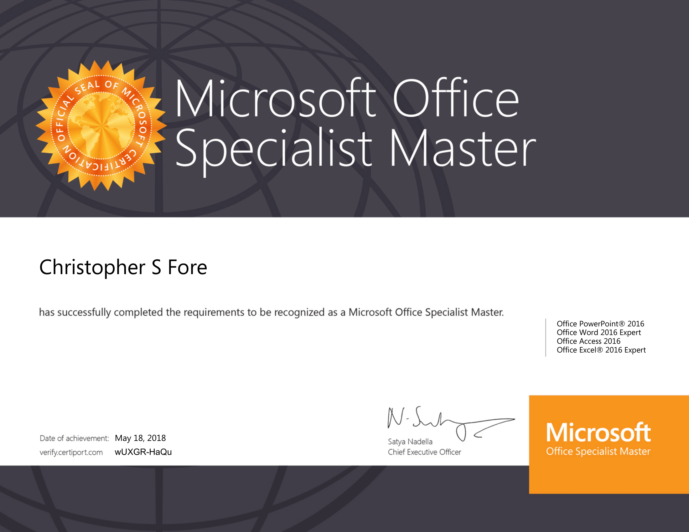

Currently, I am a certified Microsoft Office Specialist Master and Microsoft Technology Associate in Introduction to Programming using Python. The following certificates are as shown below. If you wish to verify the certificates, you can visit this site and put in the code wUXGR-HaQu for the MOS Master certificate and wnTLp-48CC for the Python certificate.

I also have 3 years of experience in computer repair, including repairing some personal computers I've acquired over the years. I have been programming in Python for around 2 years and 7 months of experience in C++, but I haven't practiced C++ as much as I have regarding Python.